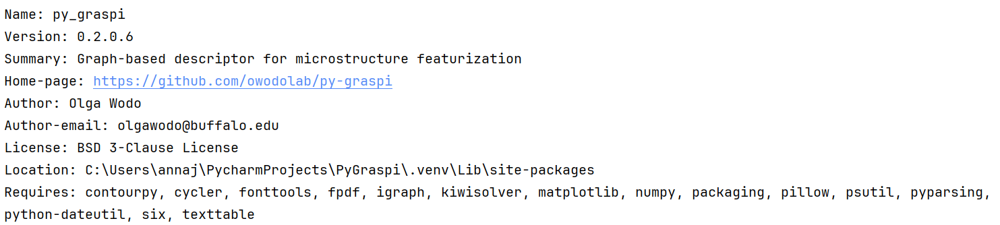
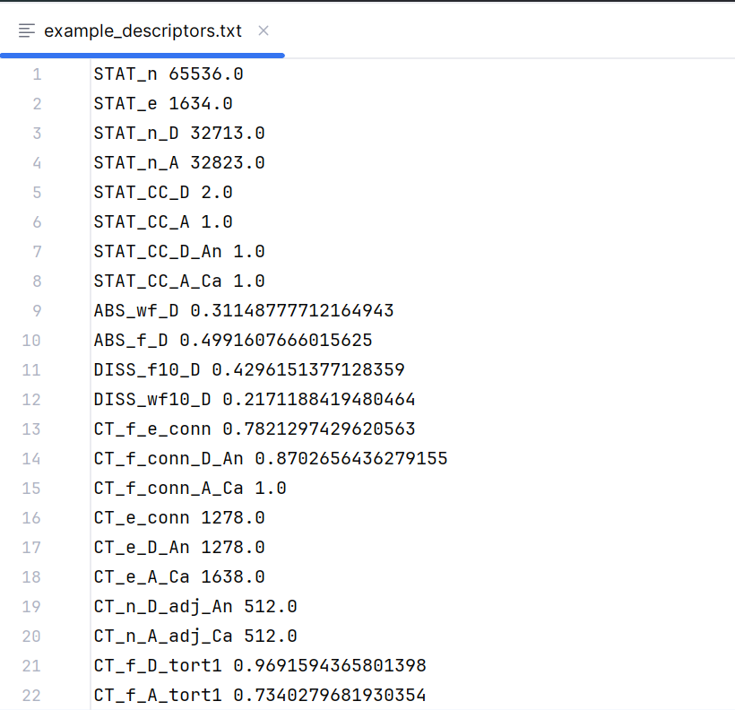
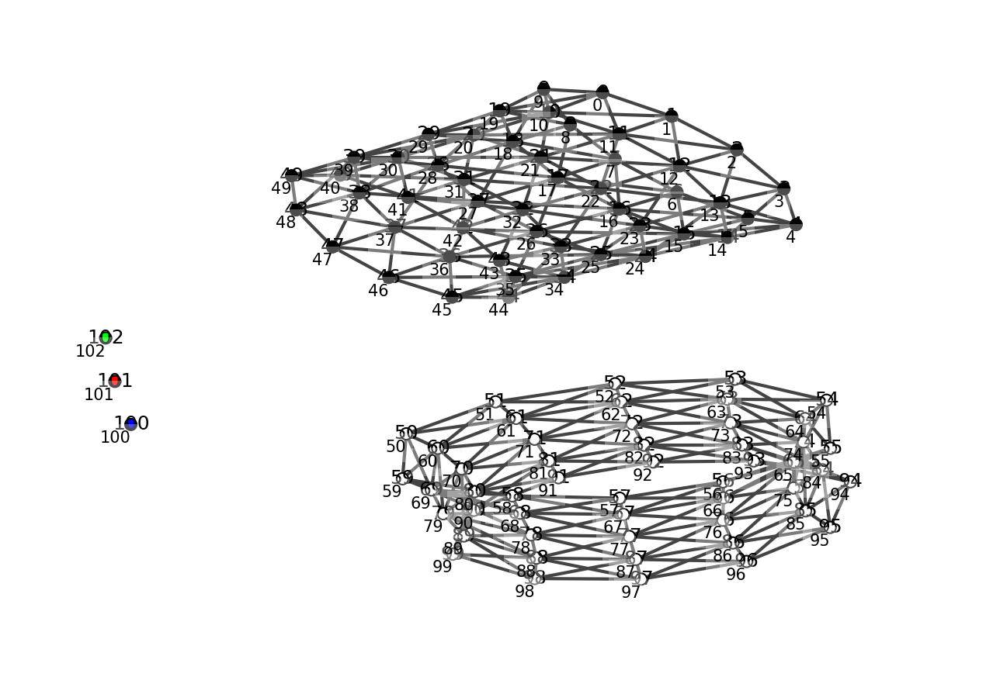
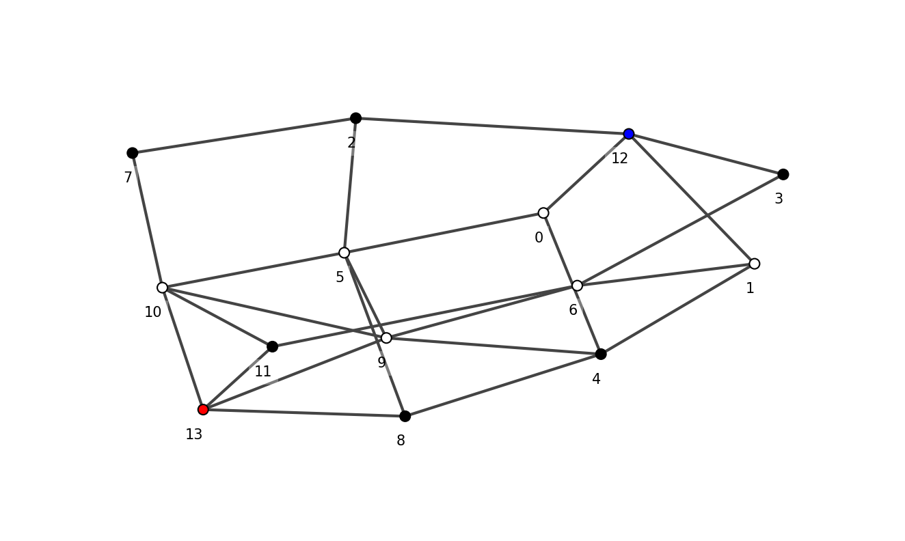

Example of Usage
Getting Started
To use the Py-GraSPI package in your project
pip install py-graspi
To verify that the module has been installed
pip show py-graspi
- Ensure you see this output on the terminal when running pip show
- 
{kind=link}
For more details, check out the api documentation.
Simple Example Usage
Step 1: import the py-graspi package:
import py_graspi as ig
Step 2: For a given morphology (in Graspi input format), generate graph and calculate descriptors
filename = "data/data_0.5_2.2_001900.txt"
graph_data = ig.generateGraph(filename)
descriptors_dict = ig.descriptors(graph_data, filename)
Step 3: Save descriptors to the file
outputFile = "example_descriptors.txt"
ig.descriptorsToTxt(descriptors_dict,outputFile)
- Below is the output file generated when calculating the descriptors for the above test data (data_0.5_2.2_001900.txt)
- 
{kind=link}
Command Line Usage
The user can use Py-GraSPI from the command line. To begin, ensure that the environment is in the src directory.
cd src #Starting at the root directory, cd into the src directory
To learn the formatting of the command line arguments, the user is encouraged to run
python graph.py
The usage message will provide the list of parameters that can be used. Py-GraSPI accepts input data in two formats: graph and array.
If input file is a .txt
If data is structured (e.g., image), the following options are available
python -O graph.py -a <INPUT_FILE.txt> -p <{0,1}> (default 0-false) -n <{2,3}> (default 2) #Can use flags
This can be used with both the -p and -n flag, just one of the flags, or none of the flags.
Examples of usage:
python graph.py -O -a ../data/2D-testFile/testFile-10-2D.txt -p 0 -n 2 #Both flags
python graph.py -O -a ../data/2D-testFile/testFile-10-2D.txt -p 1 #Only periodicity flag
python graph.py -O -a ../data/2D-testFile/testFile-10-2D.txt -n 3 #Only phase flag
python graph.py -O -a ../data/2D-testFile/testFile-10-2D.txt #No flag
- Example output when testing .txt with periodicity flag = 1
- 
{kind=link}
If input file is a .graphe
If graph is constructed externally data can be inputted in the graph format, for example:
python -O graph.py -g <INPUT_FILE.graphe> #Cannot use flags
Example of usage:
python -O graph.py -g ../data/test_data.graphe
- Example output when testing .graphe file
- 
{kind=link}
Flags for command line functionality
Py-GraSPI requires one mandatory input parameter: the name of the input file <INPUT_FILE>. Ensure that filepath is correctly formatted.
Using “../” allows access to files that may not be in the src directory.
The remaining parameters are optional, and have the default values set up, if the parameter is not explicitly provided.
-a <INPUT_FILE.txt> (row-major order): This is the option to input information about structured data. With this assumption, neighborhood of each voxel/pixel can be determined as the graph is constructed.
-g <INPUT_FILE.graphe>: This is the option to input information about the unstructured data. Input file must provide all information about the graph, this means that neighborhood of each vertex in the graph needs to be determined externally. Meta-vertices and the associated edges need to be defines in the input file. When this option is called, GraSPI reads the text file and initializes the set of vertices and edges from the input file, and need to be in agreement with these defined in the package for a given usage case.
-p <{0,1}> (default 0-false): This option specifies if periodicity on the side faces is to be applied (valid only morphology inputted as the array option -a).
-n <{2,3}> default 2 (black and white, electron-donor and electron accepting material): This option specifies the number of phases. For three-phase morphology (option -n 3, black, white and grey vertices are read, that correspond to electron-donor, electron-accepting and mixed phase material, respectively).
-O (debug mode off): This flag is required to run the command line functionality in regular mode. If this flag is omitted, you will see debug statements printed out on the terminal.